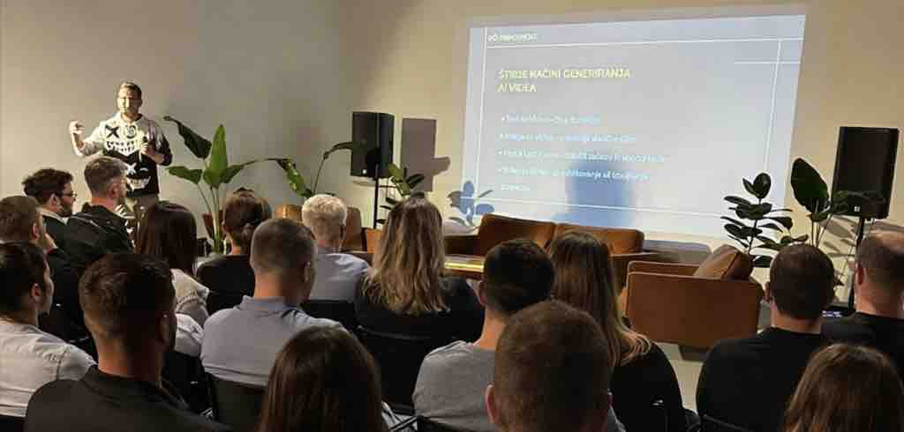
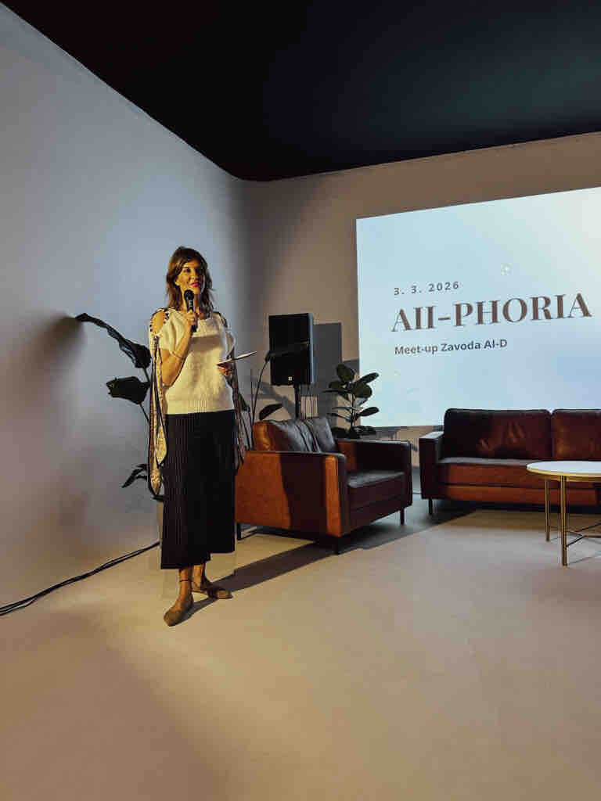
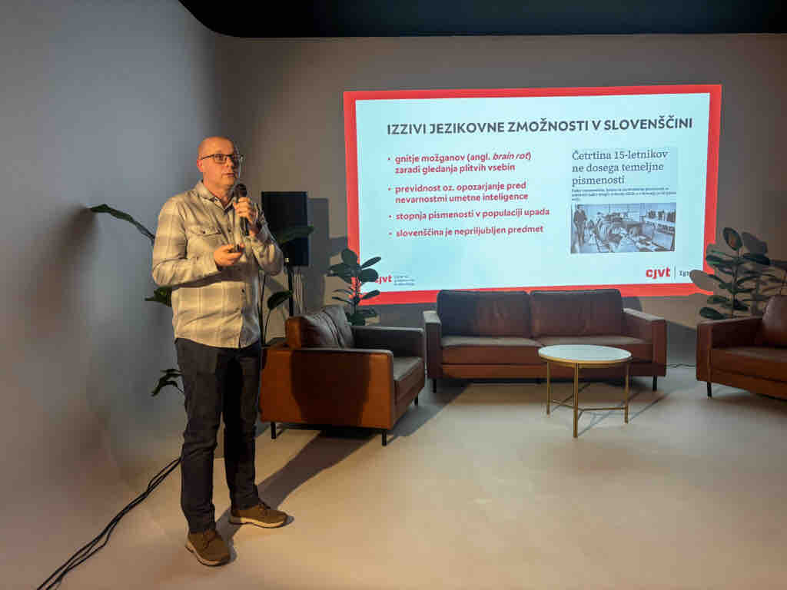
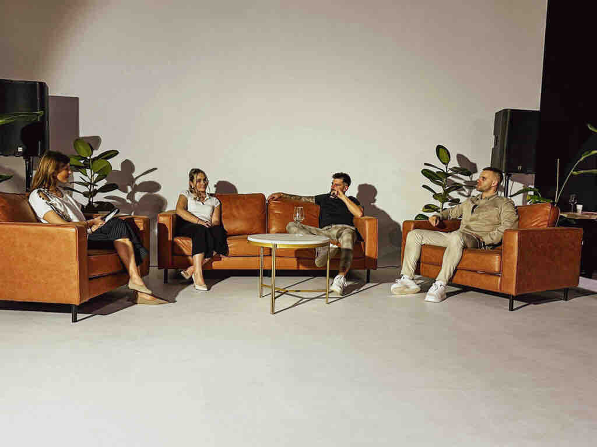
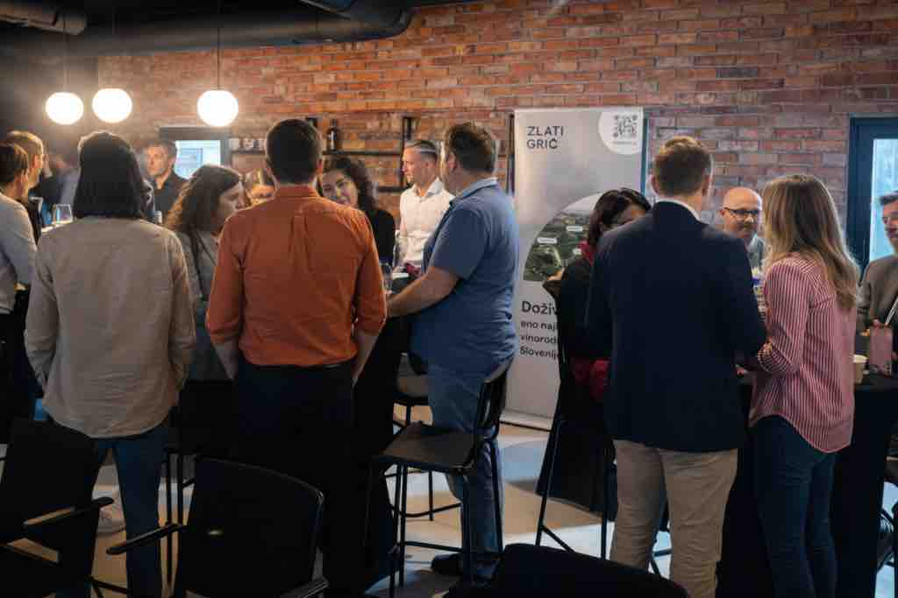

AII-phoria: Večer, ko je AI dobil energijo skupnosti

Drugi večji dogodek Zavoda AI-D v tej sezoni AII-phoria je pokazal, da umetna inteligenca ni več le tehnološka tema, temveč prostor novih idej, kariernih prebojev in poslovnega ter osebnega povezovanja.
Obiskovalci so CHILI FILMS studio napolnili do zadnjega kotička, atmosfera pa je bila vse prej kot tipično konferenčna. V zraku je bilo čutiti veliko strokovnega znanja, povezanosti in občutek, da se oblikuje skupnost, ki želi umetno inteligenco razumeti in jo tudi aktivno soustvarjati.
Direktorica Zavoda AI-D Kaja Kovič je večer odprla z mislijo, ki je zadela bistvo dogajanja. »Postajamo močna skupnost. Skupaj krepimo znanja, veščine in razmišljamo o prihodnosti dela in življenja. In če za trenutek pozabimo na skromnost, rišemo prihodnost.« Poudarila je, da se na dogodkih AI-D vedno bolj vidi nekaj, kar presega klasično izobraževanje: nastaja mreža ljudi, ki si med seboj pomagajo, delijo znanje in skupaj razvijajo projekte. »Vedno več članov se povezuje med seboj poslovno, projektno ali kadrovsko. In prav to je tisto, kar skupnost dela močno.«

AI kot strateška infrastruktura države
Dogodek je odprl Marko Štefančič, direktor Kompetenčnega centra za umetno inteligenco (KCUI), ki je na dogodku delil tudi nekaj povsem svežih poudarkov iz nove raziskave o razvoju in uporabi AI v Sloveniji, ki še ni bila širše predstavljena javnosti. Udeleženci AII-phorie so tako med prvimi slišali ključne ugotovitve o tem, kako hitro umetna inteligenca prodira v poslovno okolje in kakšne spremembe prinaša v organizacijo dela.
Štefančič je poudaril, da raziskava jasno kaže premik od eksperimentiranja k resni implementaciji.
»Podjetja ne sprašujejo več, ali bodo umetno inteligenco uporabljala, temveč kako hitro jo lahko vključijo v svoje procese.«
Po njegovih besedah se kaže tudi zanimiv trend: organizacije, ki umetno inteligenco uvajajo najuspešneje, niso nujno največje, temveč tiste z bolj odprto kulturo in pripravljenostjo na spremembe.
»Največja razlika med podjetji danes ni tehnologija, ampak pogum za spremembo.«
Štefančič je ob tem poudaril, da bo prav povezovanje znanja, raziskav in podjetij – kar je tudi osnovno poslanstvo kompetenčnega centra – ključno za to, da bo Slovenija umetno inteligenco uporabljala strateško, ne zgolj priložnostno.
EU projekti: AI kot turbo pospešek za ideje
Praktičen pogled na uporabo umetne inteligence pri evropskih razpisih je predstavil Igor Razbornik, eden bolj izkušenih mentorjev za razvoj EU projektov, ki je skozi predavanje »7 pravil nove dobe pisanja EU projektov« pokazal, kako se spreminja logika priprave projektnih prijav. Njegovo izhodišče je bilo jasno: »Če EU projekt še vedno pišete tako kot pred desetimi leti, ste že v zaostanku.« Razbornik je poudaril, da umetna inteligenca ne sme postati zgolj generator besedila, temveč strateški partner v razmišljanju o projektu. Po njegovih besedah mora AI najprej pomagati razčleniti problem, razumeti razpisne kriterije in preveriti logiko projekta, šele nato pride pisanje.»AI ne sme pisati projekta namesto vas. Njegova naloga je, da vas izzove in da postavlja ista vprašanja, kot jih bo postavil evaluator.« V predstavitvi je prikazal tudi koncept specializiranih AI mentorjev za pisanje projektov, ki delujejo kot nekakšen digitalni sparing partner: analizirajo strukturo projekta, preverjajo logične vrzeli in pomagajo uskladiti idejo z merili ocenjevanja. Tak pristop lahko bistveno poveča uspešnost prijav, saj projekti niso več napisani zgolj opisno, temveč strukturirano po logiki ocenjevalcev. »Najboljši projekti niso najlepše napisani, ampak tisti, ki evaluatorju jasno pokažejo problem, rešitev in merljiv učinek.«
Umetna inteligenca kot poslovni sodelavec
Kristina Rabar Lukež je predstavila, kako podjetja umetno inteligenco vključujejo v svoje vsakodnevne procese. Kot soavtorica knjige Uporaba umetne inteligence v poslovanju podjetjem pomaga razumeti, kako AI uvajati sistematično in smiselno. »Največja napaka podjetij je, da AI uvajajo kot orodje. V resnici gre za spremembo načina razmišljanja in organizacijsko transformacijo. Ko umetno inteligenco pravilno vključimo v procese, se zgodi nekaj zanimivega, delo postane hitrejše, odločitve bolj podatkovno podprte, ljudje pa se lahko posvetijo bolj kreativnim nalogam.« Podjetja, ki se uvajanja lotijo premišljeno, pogosto hitro opazijo tudi konkretne rezultate.
Od »brainrota« do »brainboosta«
Dr. Iztok Kosem s Fakultete za računalništvo in informatiko je v predavanju odprl zanimivo vprašanje: ali umetna inteligenca in sodobne tehnologije res slabša našo koncentracijo. Digitalni svet pogosto spodbuja površinsko brskanje po informacijah in kratko pozornost, kar mnogi opisujejo kot »brainrot«. Dr. Kosem je gostom AII-phorie, ki so v stalnem stiku s tehnologijo in posledično bolj podvrženi kognitivni utrujenosti, predstavil jezikovne igre CVJT, ki s pomočjo umetne inteligence krepijo besedišče, razumevanje in miselno prožnost. »Pri igrah na portalu CJVT uporabljamo podatke iz digitalnih slovarskih baz in jih pretvorimo v interaktivne izzive, kjer igralec išče sopomenke, sestavlja besede ali ugiba pomen. Velike jezikovne modele uporabljamo celo za generiranje napačnih možnosti v igrah in tako postanejo izzivi bolj realistični in igralec mora dejansko razmišljati.« Predstavitev je zaključil s trditvijo, da je ključna razlika v tem, kako tehnologijo uporabljamo: »AI ni problem. Problem je pasivna uporaba.«

Vizualna plat življenja: Kaj sploh še lahko verjamemo?
V dobi generativne umetne inteligence postaja vprašanje zaupanja v vizualne vsebine vse glasnejše: ali lahko še verjamemo temu, kar vidimo? To dilemo je odprl Luka Tišler, član strokovnega sveta Zavoda AI-D in strokovnjak za video produkcijo. Pokazal je več primerov, kako bliskovito napredujejo orodja za generiranje fotografij in videa ter kako prepričljivo lahko danes umetna inteligenca posnema resničnost. »Vizualna resničnost se spreminja. Fotografija ni več samoumeven dokaz,« je opozoril. A po drugi strani Tišler v tem vidi tudi izjemno priložnost za ustvarjalce – umetna inteligenca ne zmanjšuje kreativnosti, temveč jo lahko celo pospeši. »Prihodnost vizualnega sveta bo zahtevala več medijske pismenosti, hkrati pa bo vse jasneje pokazala, kdo je zares kreativen. Orodja bodo omogočala skoraj neomejene produkcijske možnosti, a tisto, kar bo na koncu naredilo razliko, bodo ideje.«
AI kot karierni preskok
Dogodek se je zaključil z okroglo mizo »AI kot karierni preskok: zakaj mladi vstopajo hitreje«, na kateri so sodelovali Manca Gruden, Jure Laharnar (podkast Underdog) in Timotej Lampe Ignjić. Pogovor je pokazal, da mnogi v AI niso vstopili kot programerji ali raziskovalci, temveč kot podjetniki, ustvarjalci in digitalni strategisti. »Veliko ljudi misli, da moraš za AI postati programer. V resnici moraš najprej postati radoveden.« Sogovorniki so poudarili, da je umetna inteligenca za marsikoga postala priložnost za popoln karierni obrat. »AI je ena redkih tehnologij, kjer lahko posameznik z radovednostjo in pogumom v zelo kratkem času ustvari novo kariero.« Veliko razprave je bilo tudi o delavnicah in izobraževanjih, ki se v zadnjem letu hitro množijo. »Delavnice imajo smisel, če ljudi pripravijo do tega, da začnejo eksperimentirati.« Panelisti so se strinjali, da bodo prihodnje delovne ekipe bistveno drugačne, a do tam je pot jasna – še več učenja in povezovanja. »Tipična ekipa čez pet let ne bo sestavljena samo iz ljudi, ampak iz ljudi in AI agentov.«

Kompetence prihodnosti: pogum, kritično razmišljanje in človečnost
Če je bilo eno vprašanje, ki je na koncu večera najbolj odmevalo, je bilo, katere kompetence bodo odločale o uspehu v svetu umetne inteligence. Panelisti so izpostavili kombinacijo tehnološke pismenosti, kritičnega razmišljanja, kreativnosti in sposobnosti sodelovanja z AI sistemi; poleg teh kompetenc pa so izpostavili še nekaj, kar pogosto spregledamo. »Največja kompetenca prihodnosti bo ohranjanje človečnosti, saj tehnologija nikoli ne sme izriniti tistega, kar nas dela ljudi.« Empatija, etika in sposobnost sodelovanja bodo zato postajale še pomembnejše: »Tehnologija nas lahko naredi učinkovitejše. Človečnost pa nas naredi relevantne.«
Večer, ki je pokazal moč skupnosti
Po zaključku programa se je večer nadaljeval v sproščenem druženju ob kavi La Natura, vinu Zlati grič in sladkih prigrizkih iz Žita. Razprave o AI-ju so se preselile iz odra v manjše skupine, kjer so se rojevale ideje, sodelovanja in prihodnji projekti. Če je prva AI-phoria dokazala, da v Sloveniji obstaja močan interes za umetno inteligenco, je druga pokazala še nekaj več: nastaja skupnost, ki želi to tehnologijo razumeti, razvijati in uporabljati odgovorno. In sodeč po energiji v studiu CHILI FILMS je to šele začetek.
